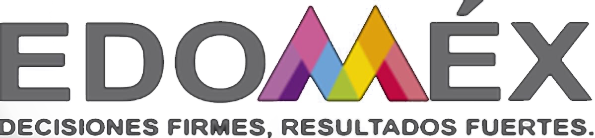
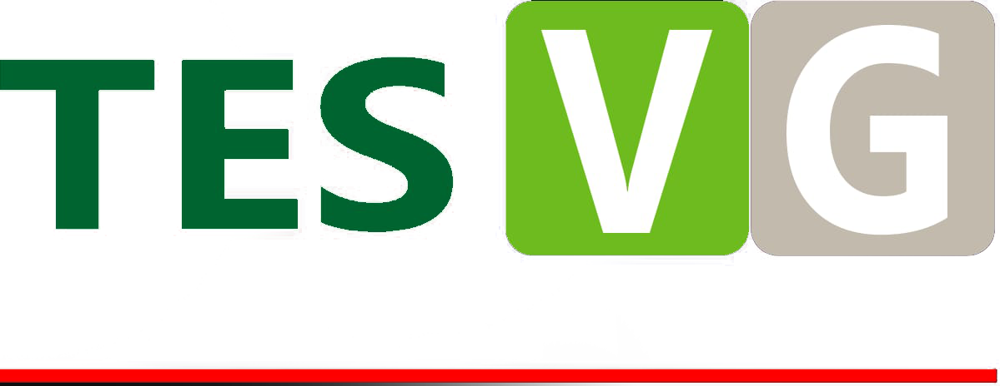

Servicio Social

Mensaje del Secretario
Sede
Tecnologico de Estudios Superiores de Valle de Bravo
Tecnologico de Estudios Superiores de San Felipe del Progreso
Tecnologico de Estudios Superiores de Jocotitlán
Tecnologico de Estudios Superiores de Tianguistenco
Tecnologico de Estudios Superiores de Villa Guerrero
Tecnologico de Estudios Superiores de Ecatepec
Tecnologico de Estudios Superiores de Chimalhuacán
Oferta Educativa
Licenciaturas
Ingenierías
Maestrías
Doctorados
Diplomados
Planta Docente
Alumnos
Educación Dual
Nodos
Becas
Calendario Escolar
Servicio Social
Residencia Profecional
Seguro Estudiantes
Titulación
Conócenos
Misión
Visión
Objetivos
Historia
Directorio
Organigrama
Trámites y Servicios
Transparencia
Mejora Regulatoria
